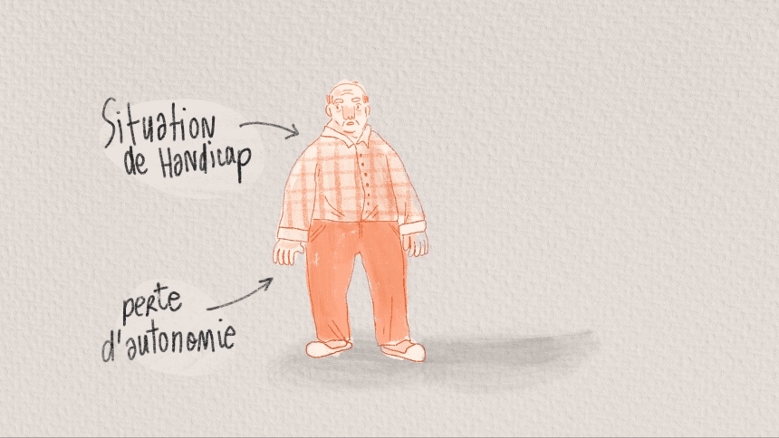
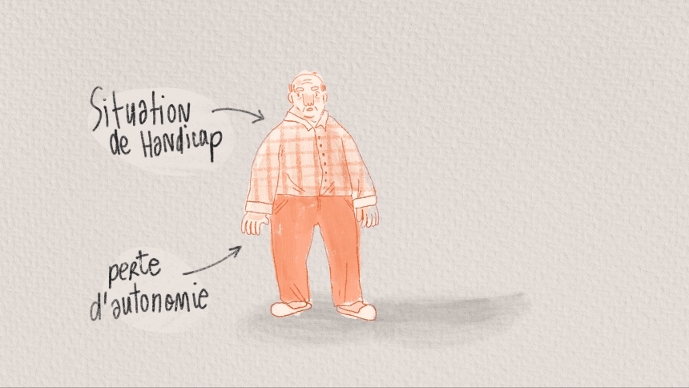
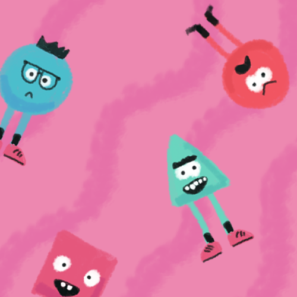
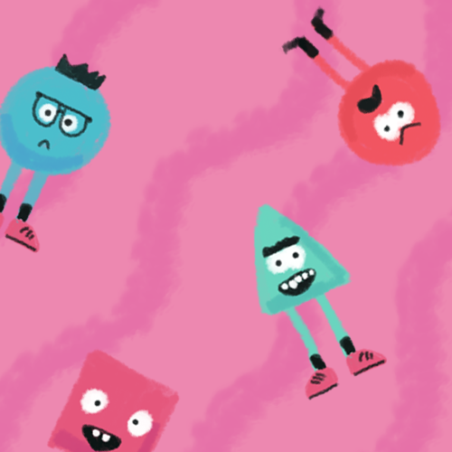

Mon Portfolio
Etienne Dufour
scrollez pour naviguer


Voici quelques projets...


Nomades
Nomades est un jeu solo, narratif, de gestion dans lequel vous incarnez une tribu du paléolithique. Cette expérience à pour particularité d’associer du matériel tangible à un support numérique.


Olympus race
Pendant ma 2e année d’étude à l’ENSAAMA, j’ai effectué un stage de plusieurs mois à VR&Co, une salle d’arcade parisienne. L’objectif a été de réaliser un jeu de rythme en réalité virtuelle afin de le proposer au public de la salle d’arcade.

Plateau procédurale
Nomades est un jeu solo, narratif, de gestion dans lequel vous incarnez une tribu du paléolithique. Cette expérience à pour particularité d’associer du matériel tangible à un support numérique.
 

Le baluchonnage
Projet vidéo réalisé pour Baluchon France visant à expliquer au grand public le fonctionnement du baluchonnage, un système d’aide à domicile longue durée.
Dessin d'observation
Le dessin à une place centrale dans mon processus de réflexion et de création. Que ce soit en cours de pratique plastique ou avec mon carnet de croquis personnel, je m’exerce à traduire plastiquement ce que je vois.
Growing
Growing est un jeu de plateau de stratégie dans lequel les joueurs ont pour objectif de développer leur civilisation en exploitant les ressources du plateau.

Pious in the cages
Pious in the cages est un jeu réalisé lors d’une game jam. Dans ce platformer vertical, vous devez trouver des clefs pour libérer des oiseaux. Il faut faire vite, car le niveau de l’eau monte.
 

Le jeu du paria
Le jeu du paria est un projet dont j’ai rédigé le GDD (game design document). Dans ce party game décalé, les joueurs doivent faire des choix respectant leurs objectifs personnels tout en prenant en compte les décisions de la majorité pour ne pas devenir le paria du groupe!
Contactez moi !
Ma période de stage:
conventionné par mon école
durée de 3 à 4 mois
à partir du 6 mai
Me contacter:
06 42 59 01 16
etiennedufour13@gmail.com